根据王道网课内容整理
第一章 计算机操作系统概述
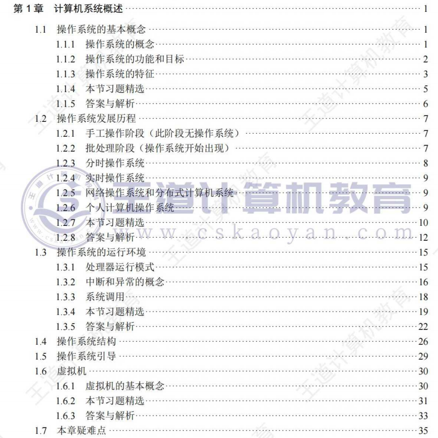
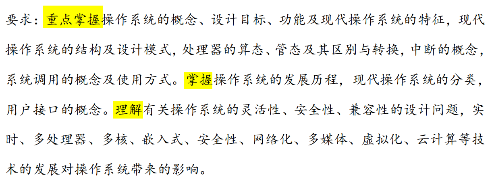
1.1 操作系统的概念
控制和管理计算机的软、硬件资源，以合理组织计算机的工作流程，方便用户使用的程序集合。
操作系统是系统资源的管理者（处理机管理，存储器管理，文件管理，设备管理）
功能和目标：向上层提供方便易用的系统软件（封装：把硬件功能封装成简单易用的服务）
是最接近硬件的一层软件（没有任何软件支持的计算机称为裸机）
1.2 操作系统的特征
并发、共享、虚拟、异步
最基本的特征：并发和共享，二者互为存在条件
1.2.1 并发
几个事件在同一时间间隔内发生（宏观上同时发生，微观上是交替发生的）
并行：真正意义上的同时发生
操作系统的并发性：计算机“同时”运行着多个程序（宏观上是同时运行，微观上是交替运行）
单核CPU：同一时刻只能执行一个程序，各个程序只能并发地执行
多核CPU：同一时刻可以执行多个程序，各个程序可以并行地执行
1.2.2 共享
系统中的资源可供内存中多个并发执行的进程共同使用
- 互斥共享：一个时间段只允许一个进程访问该资源（如摄像头）
- 同时共享：运行一个时间段内多个进程“同时”（宏观上）对它们进行访问（如对硬盘资源访问）
1.2.3 虚拟
空分复用技术：虽然只有4GB内存，但我用起来感觉远远大于4GB（虚拟存储器技术）
时分复用技术：虽然只有一个CPU，但是我开了很多和软件，感受上在用好几个CPU（虚拟处理器）
1.2.4 异步
在多道程序环境下，由于并发运行的程序会争抢使用系统资源，而系统资源有限，所以进程中的执行不是一贯到底的，而是走走停停，以不可预知的速度向前推进
1.3 OS的发展与分类
1.3.1 手工操作阶段
给纸带打孔，很多时间用在人工操作，计算机实际工作时间占比很小，浪费资源
1.3.2 批处理阶段
单道批处理系统：
引入脱机输入/输出技术，并由监督程序负责控制作业的输入、输出
通道技术实现CPU和I/O的并行
由外围机先把纸带上的程序提前存到磁带里，之后计算机直接从磁带里读，速度快很多
监督程序自动从磁带读入，输出
CPU的资源利用率提升了
问题：内存中仅能有一道程序运行；CPU依然有大量空闲时间在等待I/O完成
多道批处理系统：
操作系统正式诞生
多道程序设计技术：在计算机内存中同时存放几道相互独立的程序，它们在管理程序的控制下相互穿插地运行。
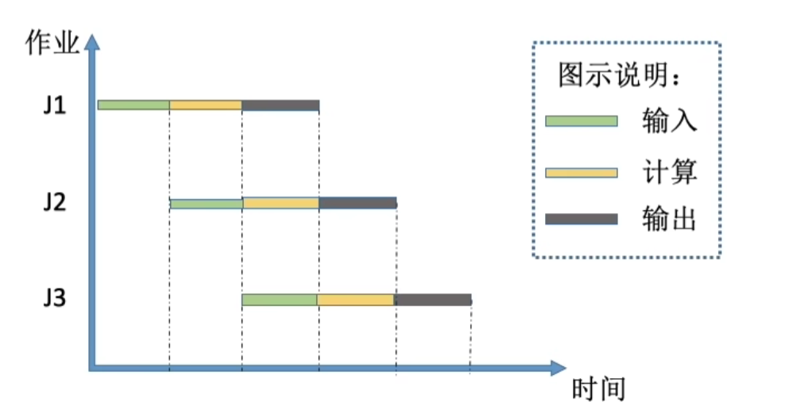
优点：多道程序并发执行，集中处理，资源利用率大幅提升
问题：没有人机交互（没法调试程序或者在程序运行过程中输入一些参数）
甘特图：
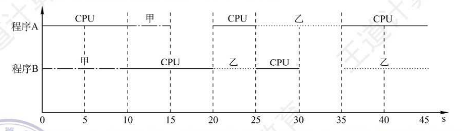
1.3.3 分时操作系统
计算机以时间片为单位轮流为各个用户/作业服务，各个用户可通过终端与计算机进行交互
优点：解决人机交互问题，且允许多个用户同时处理一台计算机，并且用户对计算机的操作相互独立，感受不到别人存在
缺点：不能有限处理紧急任务
1.3.4 实时操作系统
计算机收到外部信号及时处理，并且要在严格的时限内处理完事件。及时，可靠。
优点：优先响应紧急任务，某些紧急任务不需要时间片排队
硬实时系统：必须在严格规定时间内完成处理
软实时系统：能接受偶尔违反时间规定
1.3.5 其他几种操作系统
网络操作系统，分布式操作系统，个人计算机操作系统
1.4 操作系统的运行机制
应用程序：普通程序员写的，只能执行“非特权指令”
内核程序：组成操作系统内核，最接近硬件，可以执行“特权指令”
内核态（管态）：说明运行的是内核程序，可以执行特权指令
用户态（目态）：运行的是应用程序，只能执行非特权指令
程序状态字寄存器（PSW），其中有个二进制位，1表示“内核态”，0表示”用户态“
切换：
内核态->用户态：执行一条特权指令——修改PSW的标志位为”用户态“，操作系统主动让出CPU使用权
用户态->内核态：由“中断”引发，硬件自动完成切换过程，触发中断信号意味着操作系统强行夺回CPU使用权（但凡需要操作系统借入的地方，都会触发中断信号）
1.5 中断和异常
“中断”是让操作系统内核夺回CPU使用权的唯一途径
内中断（也称异常、例外）：与当前执行的指令有关，中断信号来自CPU内部
- 终止：试图在用户态下执行特权指令；指令非法（比如执行除法指令时发现除数是0）
- 故障：由错误条件引起，内核程序修复完后会把CPU使用权还给应用程序
- 陷入指令（访管指令），有时候应用程序想请求操作系统内核服务（应用程序主动将CPU控制权还给操作系统内核）
外中断：与当前执行的指令无关，中断信号来自CPU外部
- 时钟中断：时钟部件每隔一个时间片给CPU发送一个时钟中断信号
- I/O中断：当输入/输出任务完成时，设备像CPU发送中断信号
基本原理：不同中断信号由不同中断程序来处理，CPU检测到中断信号的类型去查询”中断向量表“，以此来查找中断处理程序在内存中存放的位置
1.6 系统调用
”系统调用“是操作系统提供给应用程序使用的接口，应用程序可通过系统调用来请求获得操作系统内核的服务（是比高级语言的库函数更底层的接口）
用户进程想使用打印机这种共享资源，只能通过系统调用向操作系统内核发送请求，内核会对各个请求协调处理
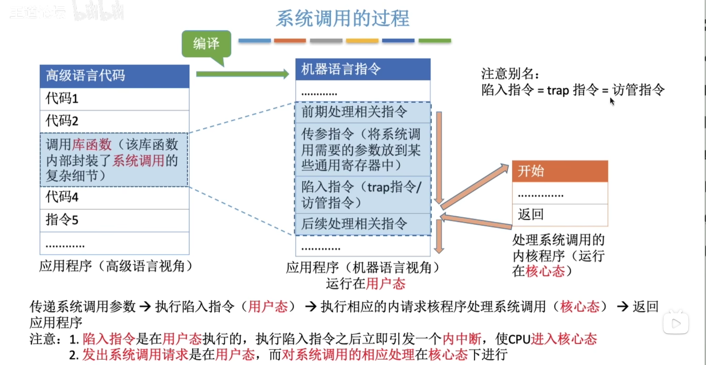
1.7 操作系统的体系结构
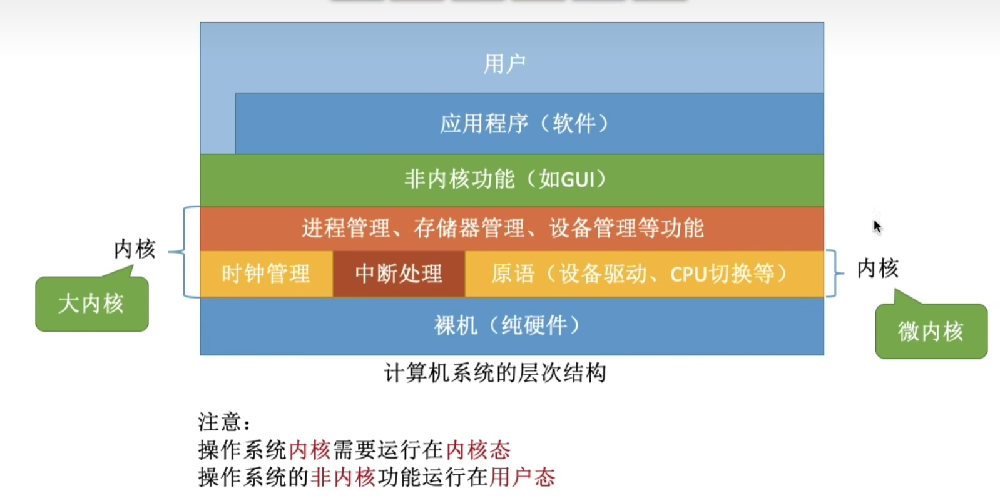
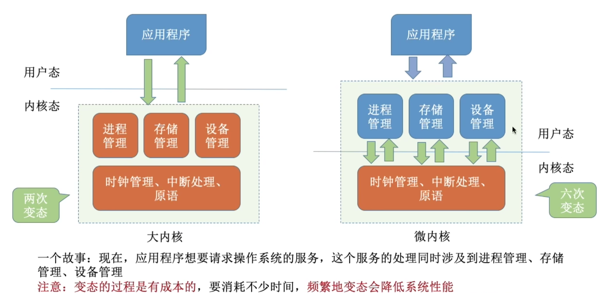
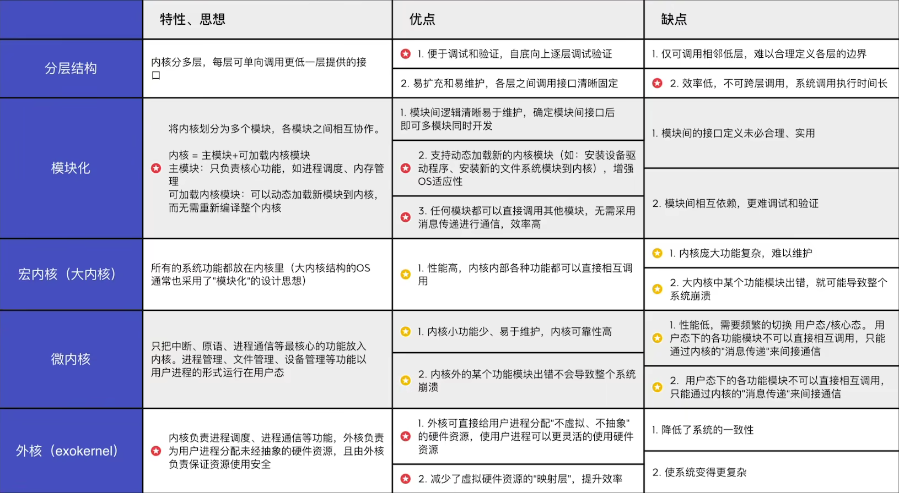
1.8 操作系统引导
课程大纲里面没有
1.9 虚拟机
课程大纲里没有
第二章 进程与线程
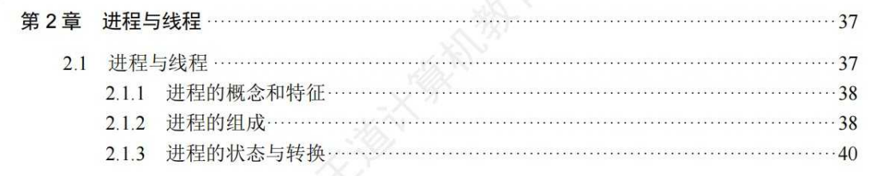
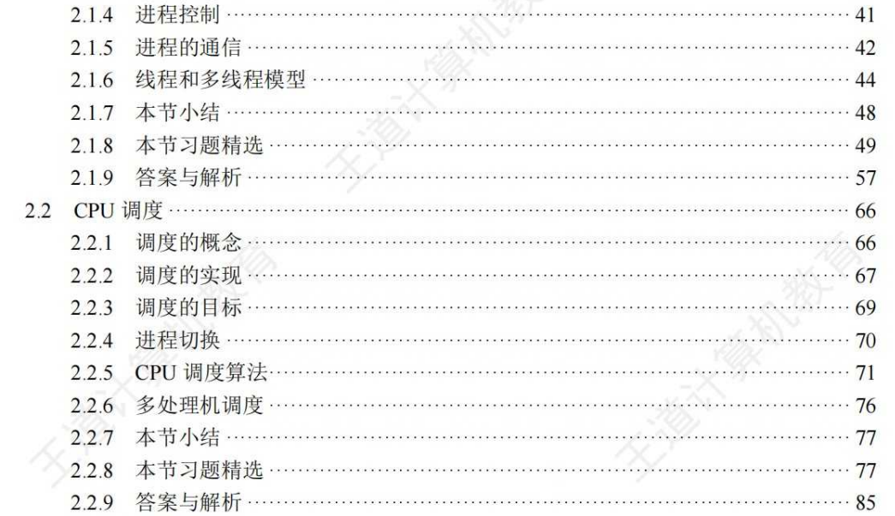
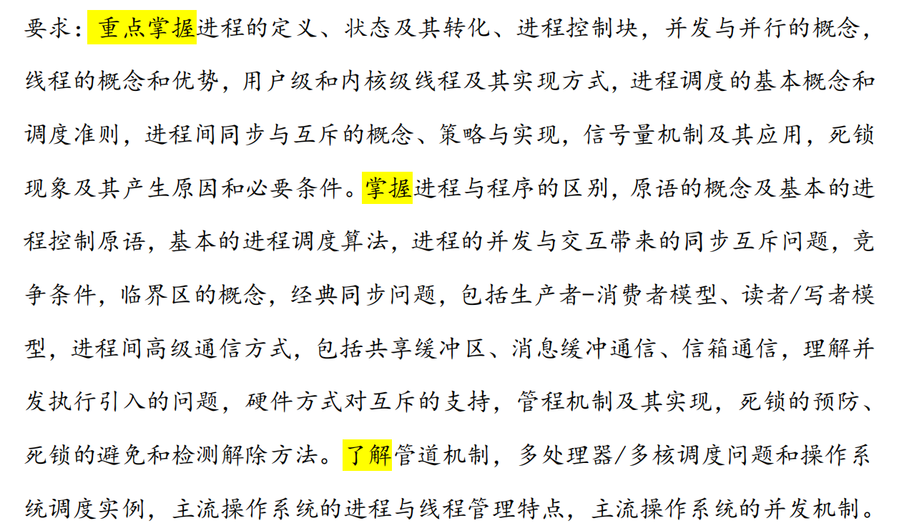
2.1 进程
2.1.1 进程的概念
程序：静态，就是个存放在磁盘里的可执行文件，就是一系列指令集合
进程：动态，是程序的一次执行过程（同一个程序多次执行会对应多个进程）
PID：进程被创建时，操作系统会为该进程分配一个唯一的、不重复的“身份证号”
PCB（进程控制块）：进程存在的唯一标识，当进程创建时，操作系统为其创建PCB，当进程结束，会回收其PCB。操作系统对进程进行管理工作所需的信息都存在PCB中。
进程实体的组成：PCB（操作系统用），程序段，数据段（进程自身用）
进程是进程实体的运行过程，是系统进行资源分配和调度的独立单位。
特征：动态，并发，独立，异步，结构性（PCB）（理解即可）
2.1.2 进程的状态及转换
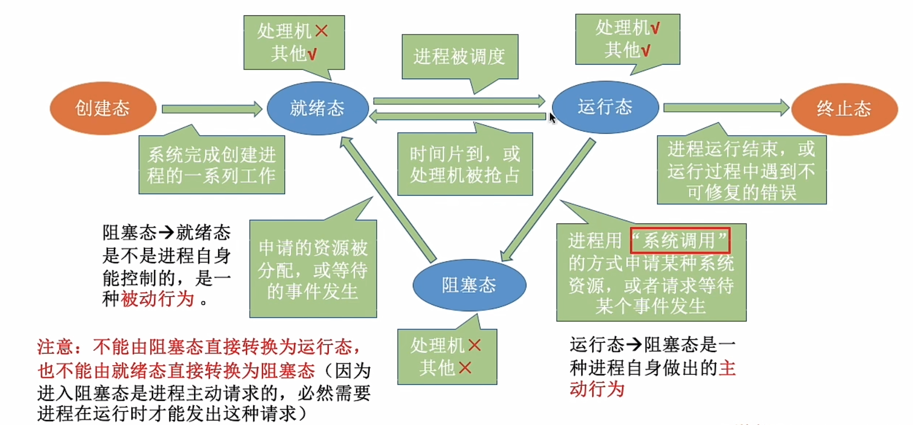
PCB中会有一个变量state来表示进程的状态
2.1.3 进程控制
进程控制：实现进程状态转换
如何实现：原语（原语的执行具有原子性，一气呵成，期间不允许被中断），用关中断指令和开中断指令这两个特权指令实现原子性
进程控制相关的原语（理解即可，不用背）：
| 原语名称 | 主要功能 | 由谁触发 | 典型触发场景 | 涉及的核心操作（理解层面） | 进程状态变化 | 关键理解要点（常考） |
|---|---|---|---|---|---|---|
| 创建 | 创建一个新进程 | 操作系统 / 父进程 | 用户启动程序；系统服务启动；父进程派生子进程 | 分配 PCB；分配必要资源；初始化进程信息；加入就绪队列 | 新建 → 就绪 | 创建后一般不立即运行，需等待调度 |
| 撤销 | 结束并删除进程 | 操作系统 / 父进程 / 进程自身 | 程序正常结束；运行出错；被强制终止 | 回收内存、文件等资源；撤销 PCB；从队列中移除 | 运行 → 终止 | 撤销后进程不可恢复 |
| 阻塞 | 暂停进程执行，等待事件 | 运行中的进程 | 等待 I/O；等待资源；等待信号量 | 保存现场；改变进程状态；插入阻塞队列 | 运行 → 阻塞 | 阻塞是主动行为，不是被剥夺 CPU |
| 唤醒 | 使阻塞进程重新可运行 | 操作系统 / 其他进程 | I/O 完成；资源可用；信号量释放 | 将进程从阻塞队列移出；放入就绪队列 | 阻塞 → 就绪 | 唤醒后不一定立刻运行 |
| 切换 | 切换 CPU 执行的进程 | 操作系统 | 时间片用完；进程阻塞；优先级抢占；中断 | 保存当前进程现场；恢复目标进程现场；更新 PCB | 运行 ↔︎ 就绪 | 切换有系统开销，对用户透明 |
原语做的事情：更新PCB中的信息；将PCB插入合适的队列；分配/回收队列
2.1.4 进程通信
进程间通信（IPC）指两个进程之间产生数据交互
各进程拥有的内存地址空间相互独立，为了保证安全，一个进程不能直接访问另一个进程的地址空间
共享存储：
共享存储区：多个进程共享同一块内存区域，通过直接读写内存进行通信。（各个进程对共享空间的访问是互斥的，pv操作）
基于存储区的共享：OS 负责分配和映射存储区，不负责通信逻辑（由进程控制）。这种共享方式速度很快，是一种高级通信的方式。
共享缓冲区：
是共享存储的具体实现方式，在共享内存中设置一块结构化区域（如循环缓冲区），用于生产者–消费者模型
消息传递：
进程间的数据交换以格式化的消息为单位。进程之间通过发送 / 接收消息这两个原语进行通信，不直接共享内存。
直接通信方式：直接指出消息要传递给谁
间接通信方式：以信箱作为中间实体（发送方和接受方用一个信箱）
管道通信：
FIFO：先进先出（读写需要遵循）
可以把管道理解成一个类似循环队列的大小固定的内存缓冲区
半双工通信：某一时间段内只能实现单项的传输
各进程互斥访问管道
管道写满，写进程阻塞；管道空，读进程阻塞
2.1.5 信号
（课程大纲没看到）
用于通知某个特定事件发生，进程收到一个信号，对改信号进行处理
什么时候处理信号：进程从内核态转为用户态时，如果有待处理信号，就处理
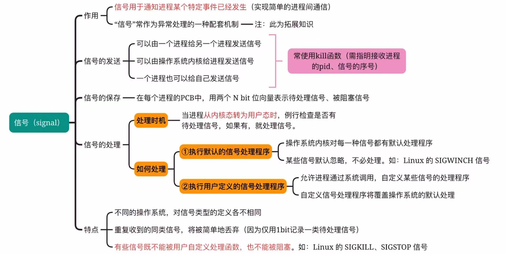
2.2 线程
2.2.1 线程的概念和特点
一个进程被分为多个线程，线程可以并发地处理（提升并发度），线程是一个基本的CPU执行单元，也是程序执行流的最小单位
引入线程后，进程是资源分配的基本单位，线程是调度的基本单位
线程并发，如果是同一进程内的线程切换，则不需要切换进程环境，系统开销小（同一进程的不同线程共享进程资源，共享内存地址空间）
2.2.2 线程的实现方式
用户级线程：
”线程“是应用程序通过线程库实现，操作系统只能看见进程
线程切换在用户态下即可完成，无需操作系统干预
缺点：一个线程被阻塞，整个进程都会被阻塞。多个线程不可在多核处理机上并行运行。
内核级线程：
处理机分配的单位。
由操作系统完成线程的管理工作，线程切换需要操作系统介入（核心态下才能完成）
一个线程被阻塞，别的线程还可以继续执行。多线程可在多核处理机上并行执行
缺点：一个用户进程占用多个内核级线程，线程切换由操作系统内核完成，需切换到核心态，因此线程管理的成本高，开销大
多线程模型：
一对一模型，多对一模型，多对多模型（n用户级映射到m内核级，n>=m）
2.2.3 线程的状态与转换
和进程的状态与转换类似
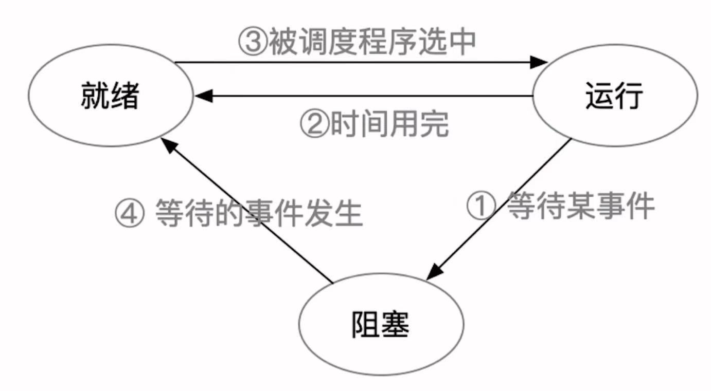
TCB对应PCB
2.3 CPU调度
2.3.1 调度的层次
高级调度（作业调度）：
作业：一个具体的任务（用户向操作系统提交一个作业 = 用户让操作系统启动一个程序）
高级调度（作业调度）：按照一定的原则从外存的作业后备队列中挑选一个作业调入内存，并创建进程。每个作业只调入一次，调出一次。作业调入时会建立PCB，调出时才撤销PCB。
低级调度（进程调度/处理机调度）：
按照某种策略从就绪队列中选取一个进程，将处理机分配给它。
进程调度是操作系统最基本的调度，进程调度的频率很高
中级调度（内存调度）：
内存不够时，可将某些进程的数据调出内存。等内存空闲或者进程需要运行时再重新调入内存。
暂时调到外存等待的进程状态为挂起状态。被挂起的进程PCB会被组织称挂起队列。
中级调度（内存调度）：按照某种策略决定将哪个处于挂起状态的进程重新调入内存。
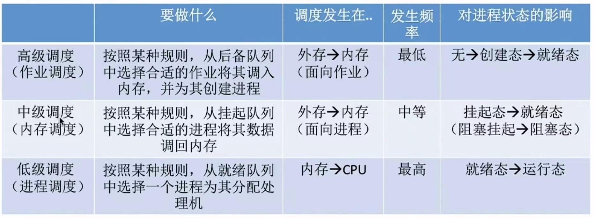
2.3.2 进程调度的时机、切换与过程、方式
进程调度的时机：
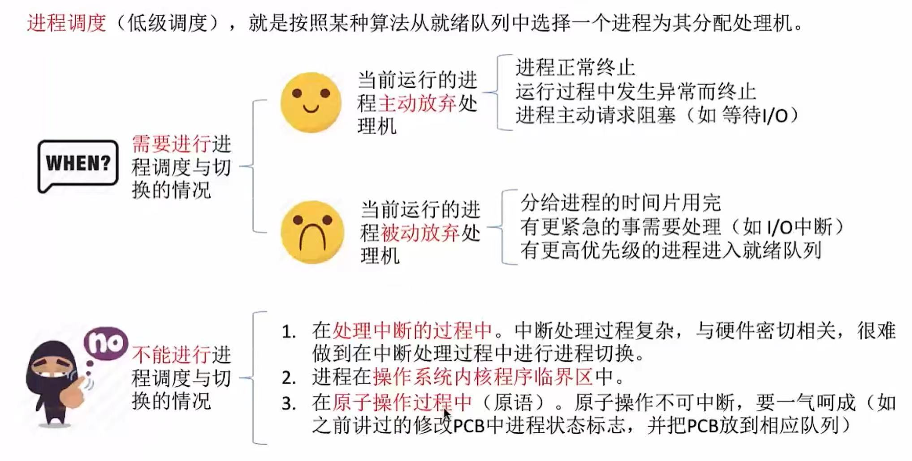
临界资源：一个时间段内只允许一个进程使用的资源。各进程需要互斥地访问临界资源。
临界区：访问临界资源的那段代码
访问内核程序临界区期间不能进行调度和切换
访问普通临界区时可以
进程切换是有代价的，不是越频繁越好
进程调度的方式：
非抢占方式：只允许进程主动放弃处理机。在运行过程中即便有紧急任务来，当前进程依然会继续使用处理机。（只有运行进程阻塞或退出才触发调度程序工作）
抢占方式：如果有更紧急的任务来了，立刻暂停正在执行的任务，将处理机分配给更紧迫的进程（时钟中断触发调度程序工作）
什么事件触发调度程序：创建新进程、进程退出、运行进程阻塞、I/O中断发生
2.3.3 调度算法
看题目
评价指标：
周转时间
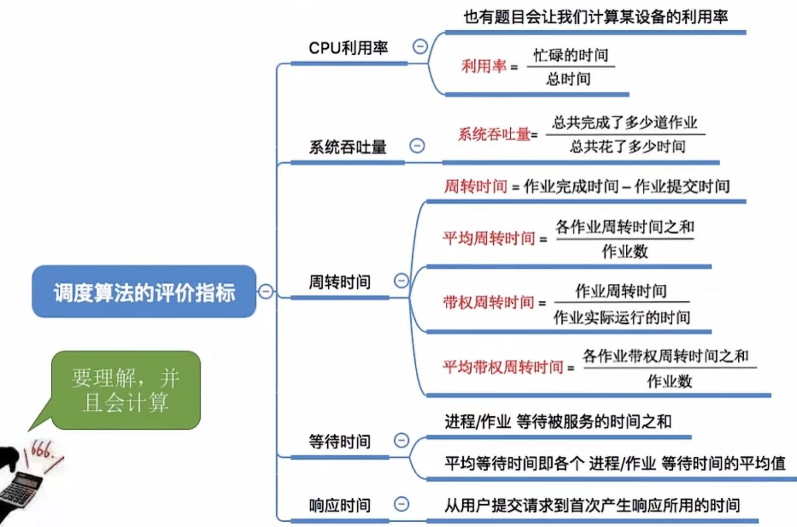
作业提交时间 = 作业到达时间
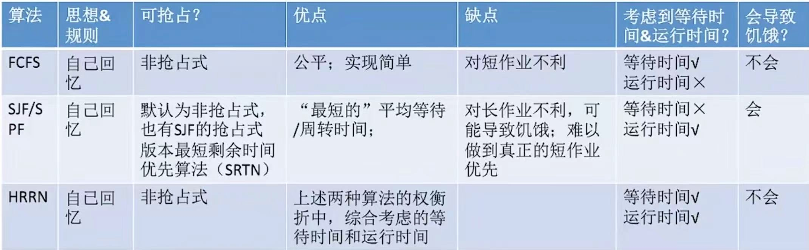
先来先服务（FCFS）：顾名思义，先来的先处理
短作业优先：
- 非抢占式：每一个作业完成后（一个作业上处理机就会把它执行完再换下一个），比较剩下的哪个是最短的
- 抢占式：每一个作业到达时，比较剩下的哪个是最短的，如果是处理到一半的就看剩下部分的长度
高响应比优先（HRRN）：一个作业上处理机就会把它执行完再换下一个，计算所有就绪进程的响应比，选响应比最高的进程上处理机。响应比 = （等待时间+运行时间）/（运行时间）
以上三种适合早期批处理系统
作业调度和进程调度：作业调度是指作业调入内存，进程调度是上CPU执行
时间片轮转：轮流让就绪队列中的进程执行一个时间片（每次选择排在队头的进程，下处理机的时候放在队尾。如果下处理机的同时新进程到达，默认新进程先进入就绪队列）
优先级调度：
- 非抢占式：每次选当前已到达且优先级最高的，一个作业上处理机就会把它执行完再换下一个
- 抢占式：每个时刻，都选当前优先级最高的
多级反馈队列调度算法：
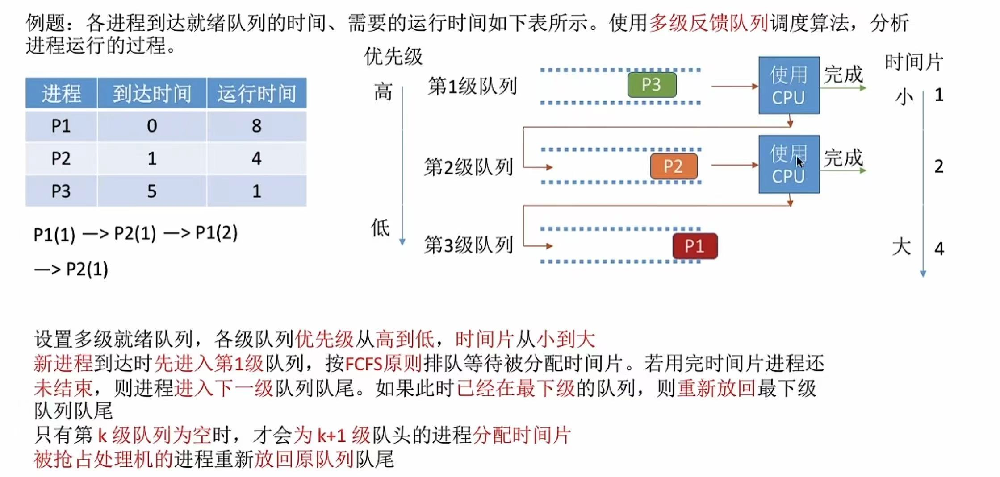
以上三种适合交互式系统
多级队列调度算法：（和上面那个不是一个）
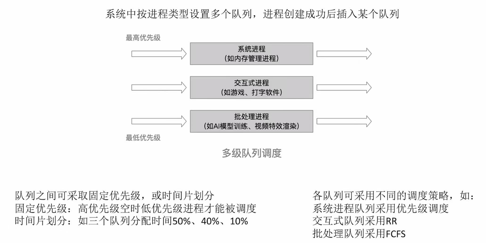
2.3.4 多处理机调度
追求目标：
- 负载均衡：尽可能让每一个CPU同等忙碌
- 处理机亲和性：尽量让一个进程调度到同一个CPU上运行，以发挥CPU中缓存的作用
公共就绪队列：所有CPU共享一个就绪队列
- 天然负载均衡
- 亲和性不好
私有就绪队列：每个CPU都有一个私有队列
- 负载均衡：推迁移，拉迁移
- 天然亲和性
2.4 进程同步与互斥
2.4.1 同步与互斥的概念
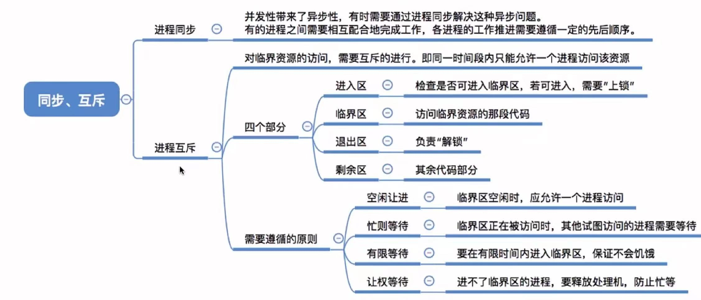
进程同步：让各并发进程按要求有序地推进
2.4.2 进程互斥的软件实现方法
看题目
王道说很重要
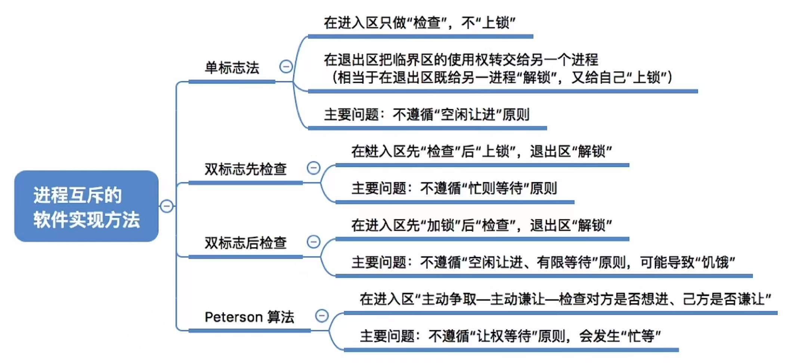
单标志法：每个进程自己访问完之后把使用权交给另一个进程，只能轮流访问
双标志先检查：先检查对方有没有意愿，如果对方有意愿，就一直等待；如果没有，就表示自己想进入临界区
双标志后检查：先表示自己有无意愿，再检查对方有无意愿
Peterson算法：先表达自己有意愿，再把使用权谦让给对方，谁最后一次谦让，那使用权就给对方（修改的是同一个变量turn）
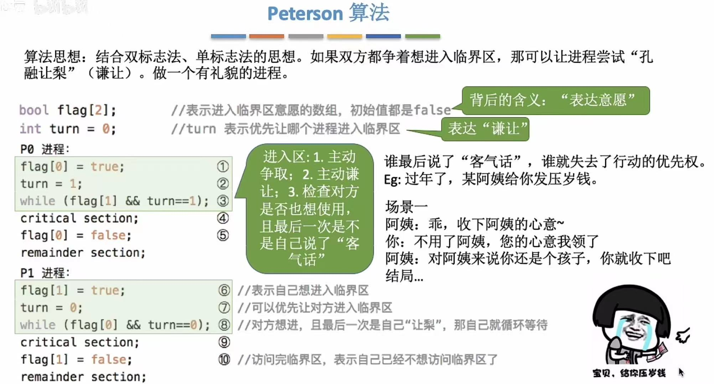
2.4.3 进程互斥的硬件实现方法
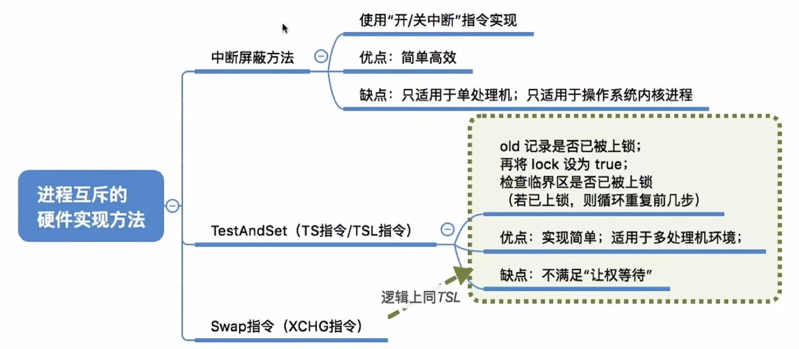
TS指令：
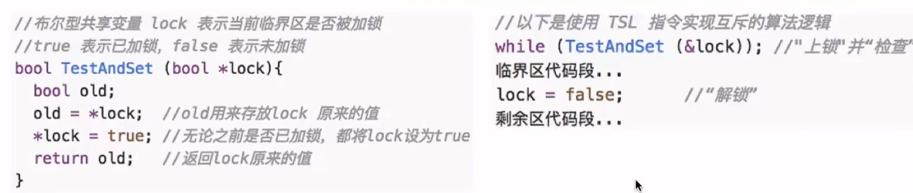
如果临界区开始没有被加锁，则lock值为false
执行while那一行时，首先检查到TestAndSet返回的是false，所以会执行接下来的代码（也就是进入临界区），与此同时，因为执行了TestAndSet，所以lock的值被设置为了true，也就是说，检查和上锁是同时进行的
互斥锁：aquire()获得锁，release()释放锁
缺点：忙等待
适用于多处理器系统：上锁时间短，等待代价低，一个核忙等，其他核照常工作，快速释放临界区
不适合单处理机系统：忙等过程中不可能解锁
2.5 信号量机制
2.5.1 信号量
信号量：表示系统重某种资源的数量
P操作：wait原语
V操作：signal原语
整型信号量：用整数型变量作为信号量（对其只能三种操作：初始化，P，V）（会发生忙等）
记录型信号量：（很重要）
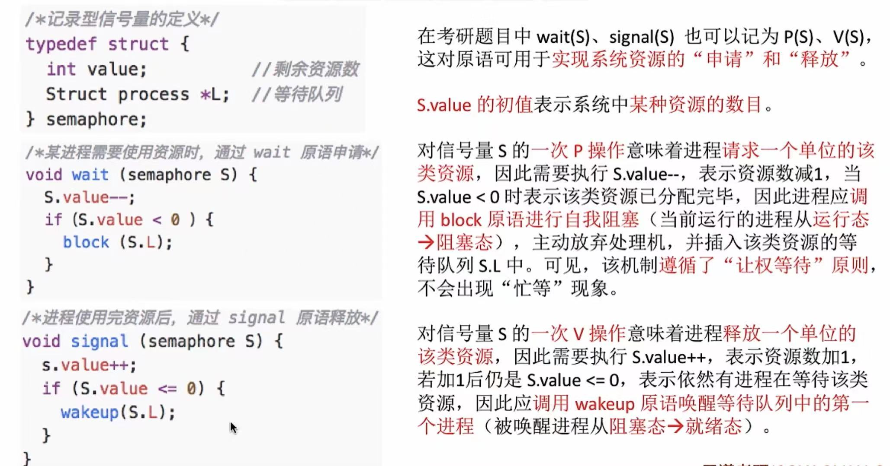
2.5.2 信号量机制实现互斥
先定义semaphore mutex=1; // 初始化同步信号量，初始值为1
（只有一个进程可以进入临界区，即没有两个能同时进入，即互斥）
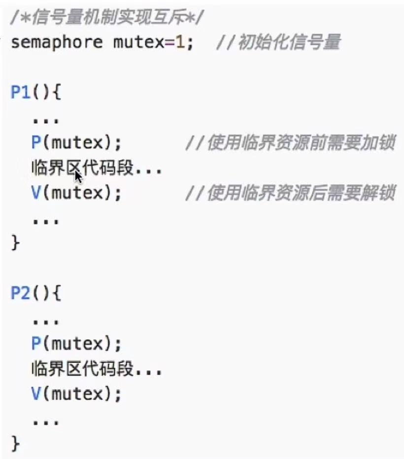
P(S)——申请一个资源S，如果资源不够就阻塞等待
V(S)——释放一个资源S，如果有进程在等待该资源，就唤醒一个原先因为资源不够被阻塞的进程
平时定义记录型信号量就写成：semaphore mutex = 资源量
（不同的临界资源要设置不同的互斥信号量，比如mutex1，mutex2，P,V必须成对出现）
2.5.3 信号量机制实现同步
同步：进程按想要的顺序执行
先定义semaphore S=0; // 初始化同步信号量，初始值为0
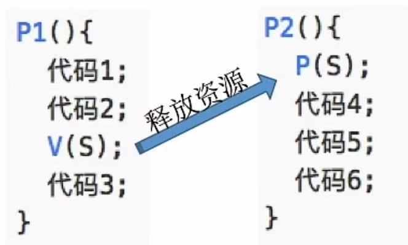
可以保证P1在P2前执行：前V后P
例题：
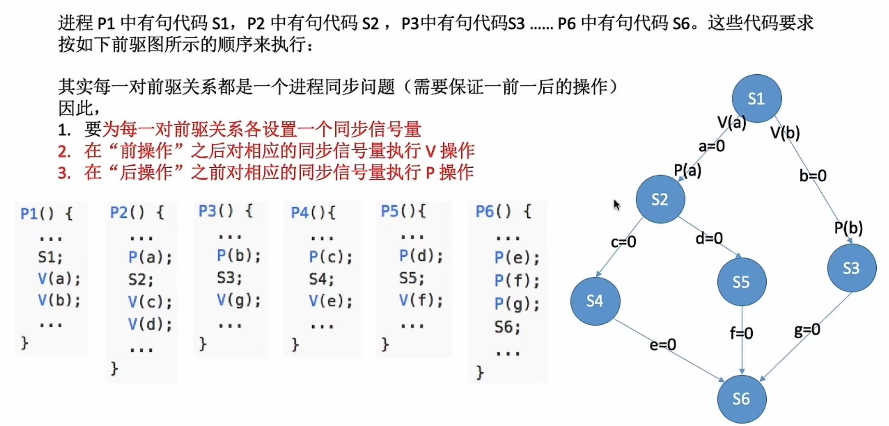
2.5.4 生产者-消费者问题
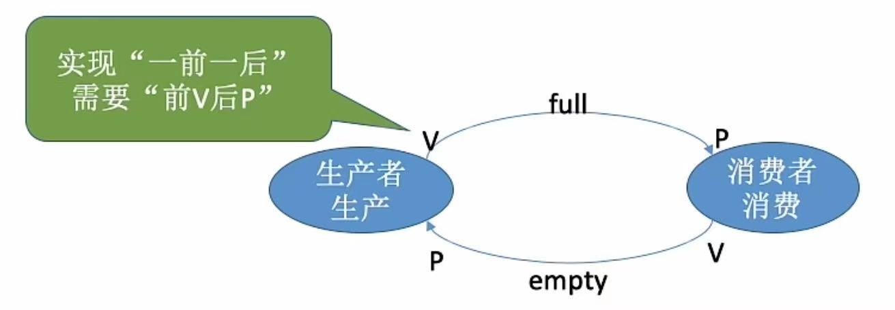
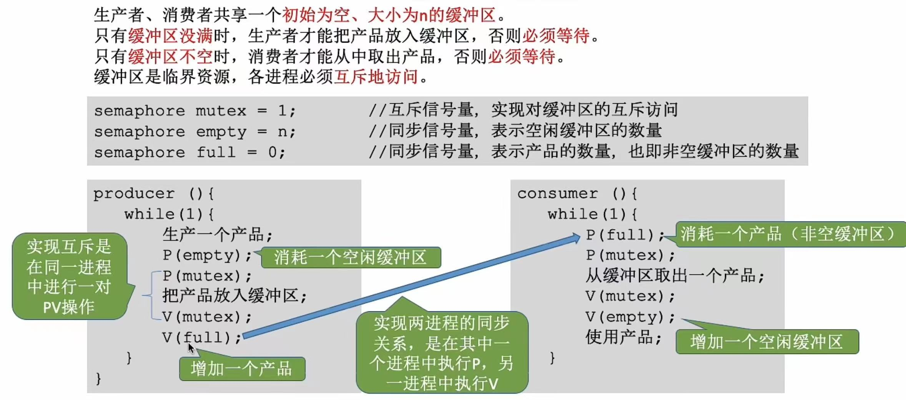
实现同步的P操作必须在实现互斥的P操作之前，否则会出现死锁（V没关系）
多生产者，多消费者问题：
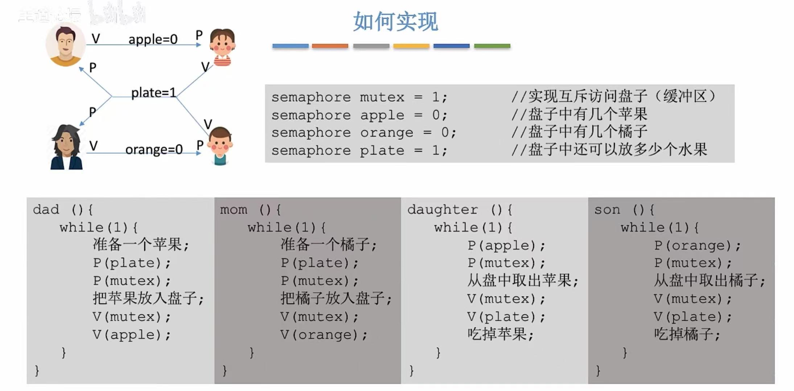
要理解为一个时间再另一个事件前，不理解为一个进程在另一个进程前
2.5.5 读者-写者问题】
可以多个同时读。但是一个在写，其他都不能操作。（即写写、写读互斥，读读不互斥）（类比数据库知识）
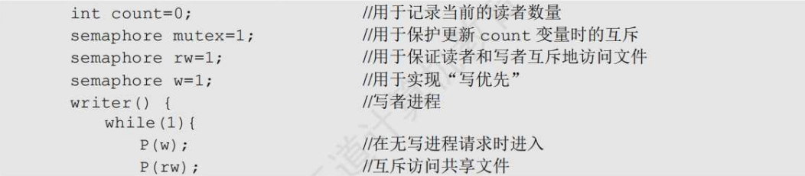
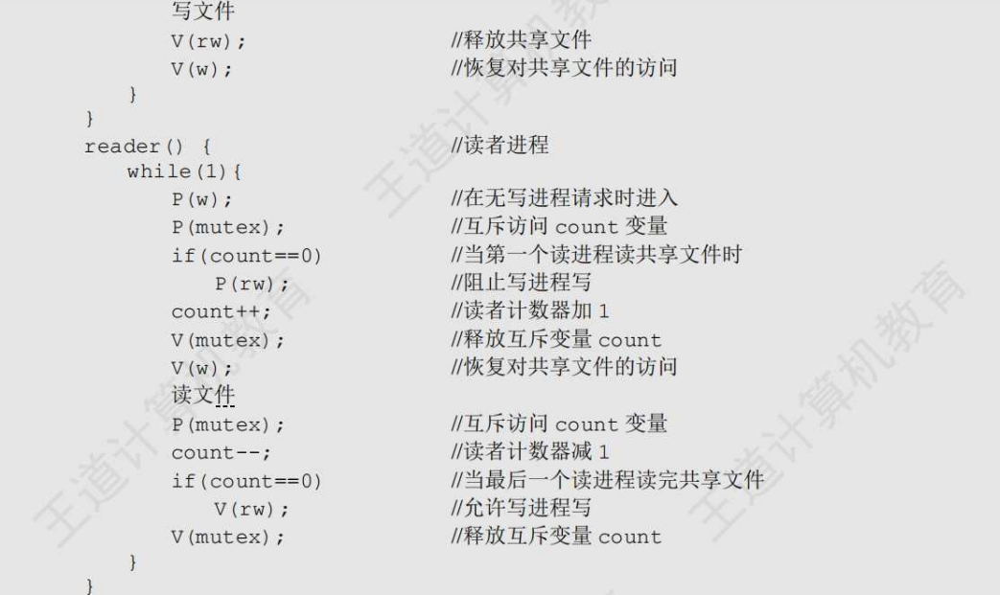
rw的设置：读的时候就不能写
w的设置：如果没有的话，只要有读进程，写就会一直被阻塞
2.5.6 哲学家进餐问题
课程大纲没看见
每个进程持有两个或以上临界资源。
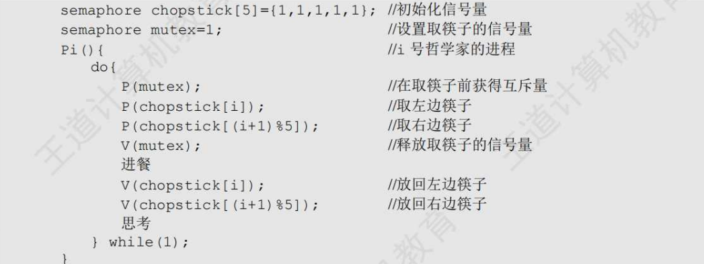
mutex设置的意义在于，一个哲学家拿左边筷子和右边筷子肯定一起拿。如果一个哲学家拿了左边筷子，因为拿不到右边筷子被阻塞，mutex也不会让别的哲学家拿筷子，会等上一个哲学家吃完，再把右边筷子给他，然后继续执行。（解决死锁）
2.5.7 管程
作业题涉及到一个，但是王道的弹幕说考研只考过选择，而且后面讲的代码标了拓展
管程的组成：
- 共享数据结构
- 对数据结构初始化的语句
- 一组用来访问数据结构的过程（函数）
管程的基本特征：
- 各外部进程/线程只能通过管程提供的特定的“入口”才能访问共享数据
- 每次进允许一个进程在管程内执行某个内部过程
管程是一种高级进程同步机制，将共享数据、对共享数据的操作以及同步控制封装在一起，通过互斥进入和条件变量机制，减少同步错误的发生。
2.6 死锁
2.6.1 死锁的概念
死锁：各进程都在等待对方手里的资源，导致各进程都阻塞。
死锁一定是“循环等待对方手里的资源”导致的，因此如果有死锁现象，那至少有两个或两个以上的进程同时发生死锁。另外，发生死锁的进程一定处于阻塞态。
饥饿：可能只有一个进程发生饥饿。发生饥饿的进程既可能是阻塞态(如长期得不到需要的I/0设备)，也可能是就绪态(长期得不到处理机)
死循环：可能只有一个进程发生死循环。死循环的进程可以上处理机运行(可以是运行态)，只不过无法像期待的那样顺利推进。死锁和饥饿问题是由于操作系统分配资源的策略不合理导致的，而死循环是由代码逻辑的错误导致的。死锁和饥饿是管理者(操作系统)的问题，死循环是被管理者的问题。
死锁产生的必要条件：互斥条件、不剥夺条件（没用完不能被其他进程抢走）、请求和保持条件（保持着某些资源不放，请求别的资源）、循环等待条件（循环等待是必要不充分）
对不可剥夺资源的不合理分配，可能导致死锁。
2.6.2 死锁的处理策略——预防死锁
理解即可，不需要死记
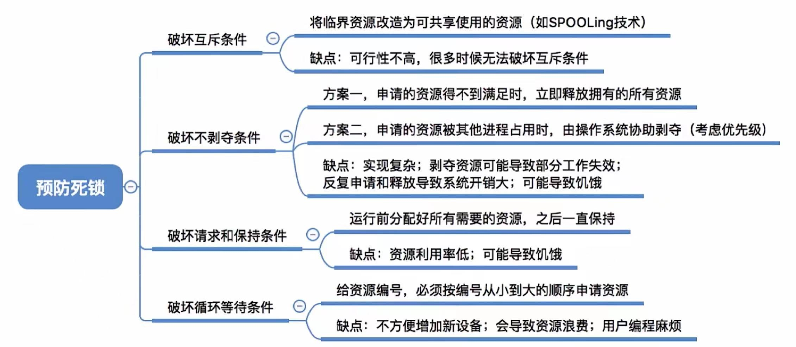
2.6.3 死锁的处理策略——避免死锁
安全序列：如果系统按照这种序列分配资源，每个进程都能顺利完成
安全状态：只要能找出一个安全序列，就是安全状态（否则就是不安全状态）
- 处于安全状态，一定不会死锁。如果不安全状态，可能死锁但不一定（反过来，如果发生死锁，则一定是不安全状态）
银行家算法：在资源分配之前预先判断这次分配是否会导致系统进入不安全状态，以觉得是否答应资源分配请求。
银行家算法步骤:
- 检查此次申请是否超过了之前声明的最大需求数
- 检查此时系统剩余的可用资源是否还能满足这次请求
- 试探着分配，更改各数据结构
- 用安全性算法检查此次分配是否会导致系统进入不安全状态
安全性算法步骤：
- 检查当前的剩余可用资源是否能满足某个进程的最大需求，如果可以，就把该进程加入安全序列，并把该进程持有的资源全部回收。
- 不断重复上述过程，看最终能否让所有进程都加入安全队列。
看作业那个题就很清楚。
2.6.4 死锁的处理策略——检测和解除
死锁的检测：
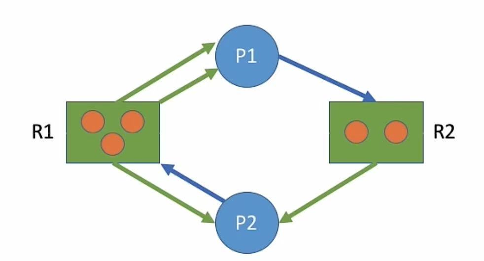
以R1为例，它被分配出去的资源是3个，所以P2向它请求一个资源就请求不到了，所以P2被阻塞。
但是P1不会被阻塞，所以可以把P1相连的所有边去掉，然后以此类推看能不能把边全去掉。不能就是死锁。
死锁的解除：
化简资源分配图之后，还留着边的就是死锁进程。
如何解除：资源剥夺法、撤销进程法、进程回退法
第三章 内存管理
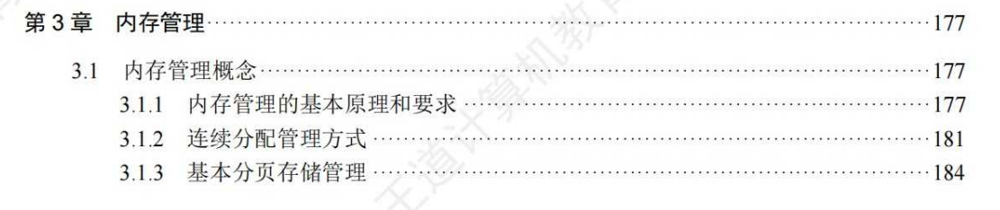
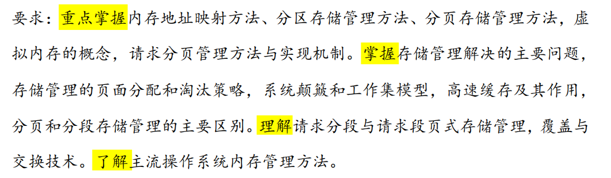
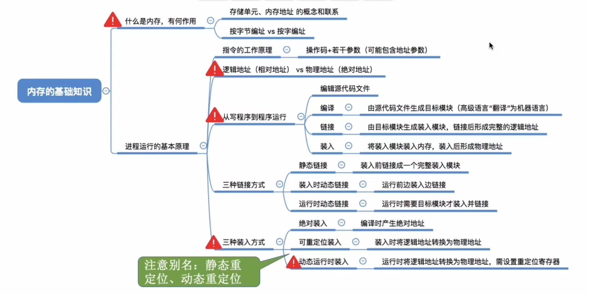
3.1 内存管理的概念
概念：形成大体框架就行
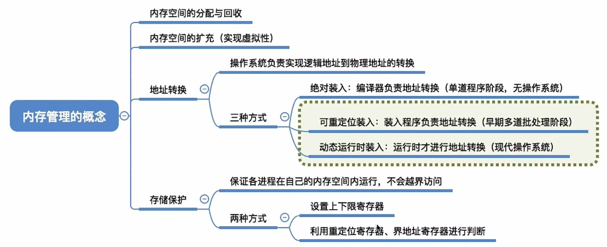
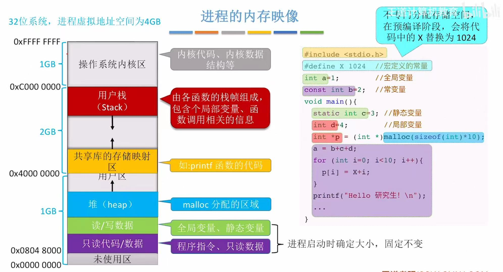
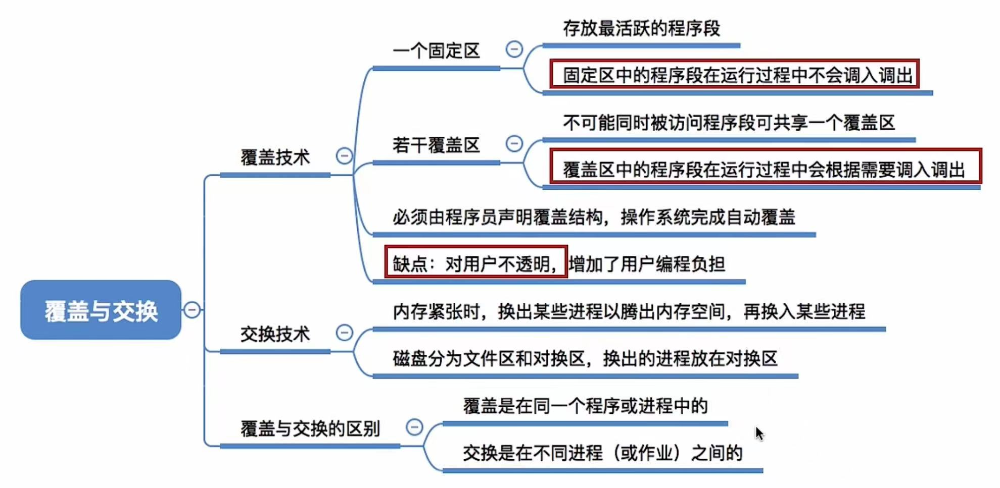
课程大纲中说只需理解，考研大纲貌似已删
3.2 分区存储管理
3.2.1 连续分配管理方式
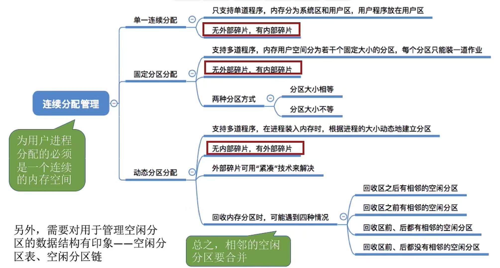
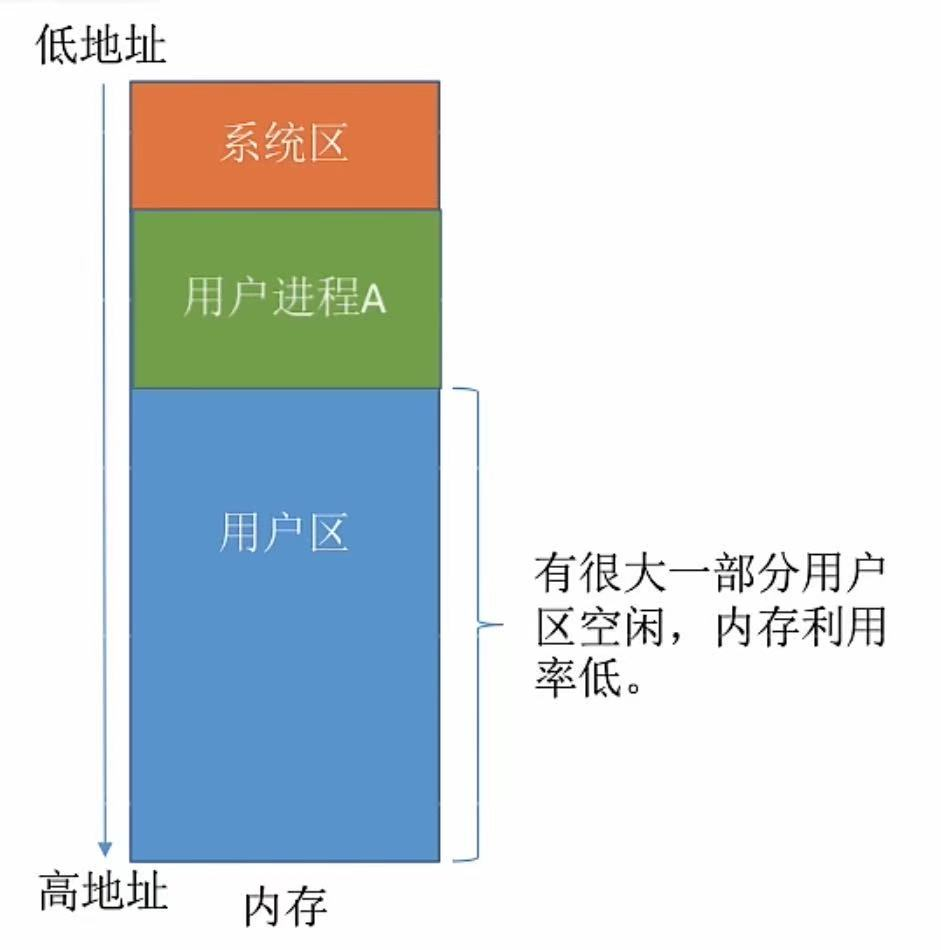
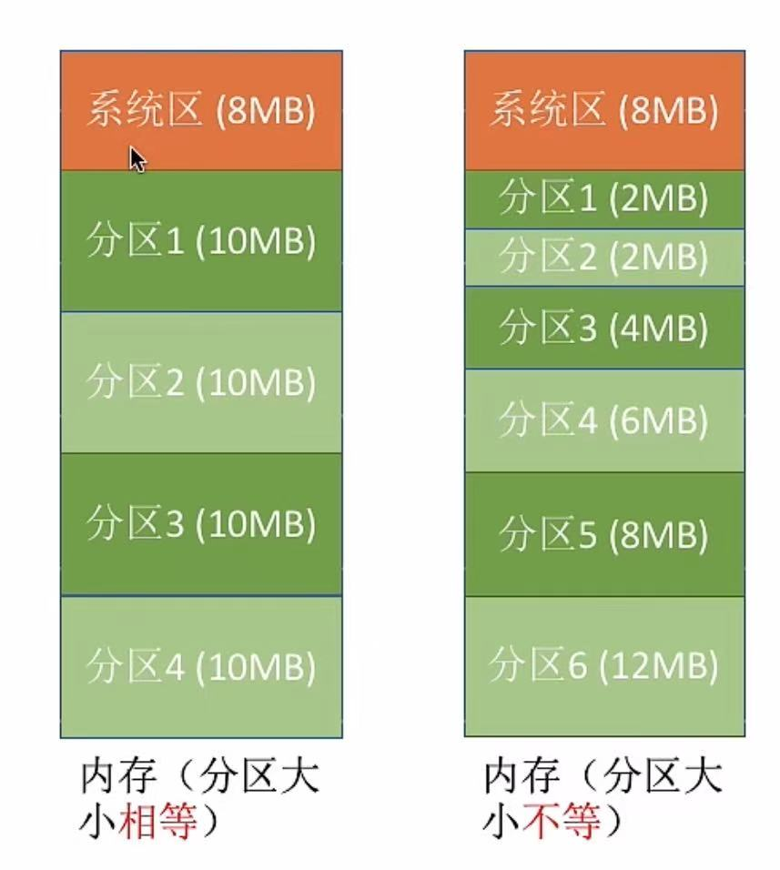
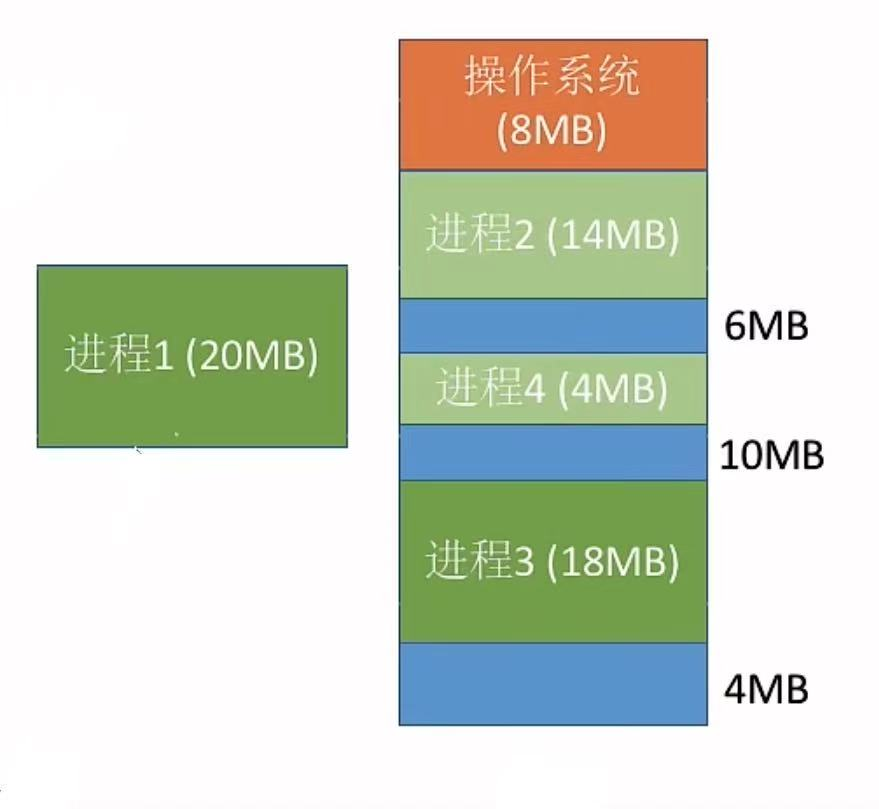
3.2.2 动态分区分配算法
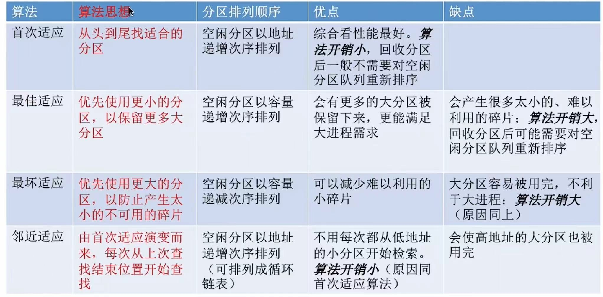
首次适应（最先适配）：找到第一个满足大小的空闲块
最佳适应（最优适配）：找到第一个且大小最接近请求块的空闲块
最坏适应（最坏适配）：找最大空闲块
邻近适应：在首次适应基础上，从上次查找结束位置开始查找
3.3 分页存储管理
3.3.1 分页存储管理的概念
可通过内存块数量推算出块号占多少字节
实际的物理地址 = 页面在内存中的起始地址 + 页内偏移量
页号 = 逻辑地址/页面长度
页内偏移量 = 逻辑地址%页面长度
参考计组
3.3.2 基本地址变换机构
重点理解、记忆基本地址变换机构（用于实现逻辑地址到物理地址转换的一组硬件机构）的原理和流程
页表寄存器（PTR）存放页表在内存中的起始地址F和页表长度M
根据逻辑地址计算物理地址步骤（地址变换过程）：
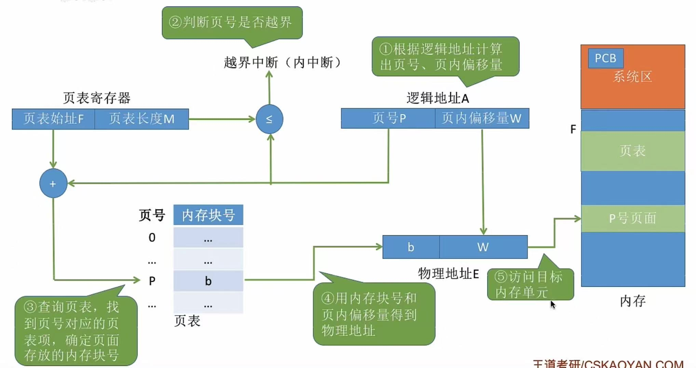
物理地址 = 内存块号b *页面大小L + 页内偏移量W
（实际上计算机中用 页表起始地址F + 页号P * 页表项长度 找到 页表项地址b之后，和W一拼接就是物理地址）
页表项长度：每个页表项占多大存储空间
页面大小：一个页面占多少存储空间
页表长度：有多少页
页表项：页表里面的一行（其实就是表示内存块号需要的字节数，比如要有220 个块，那么就需要20个bit，就是3个字节来表示内存快号，那么页表项长度就是3B）
我的大白话：现在有一个逻辑地址，逻辑地址由页号和页内偏移拼接形成，要想得到物理地址，先到页表寄存器，得到页表起始地址，然后页表起始地址+页号*页表项长度得到了一个地址，到这个地址查询到了内存块号（也就是物理地址的页框号），和页内偏移拼接，得到了物理地址
页式管理中地址是一维的
3.3.3 具有快表的地址变换机构
TLB快表：逻辑地址直接映射物理地址
快表命中：仅需一次访问内存
快表未命中：两次访问内存（一次访问页表，一次访问物理地址的内存单元）（找到页表项后同时存入快表）
3.3.4 两级页表
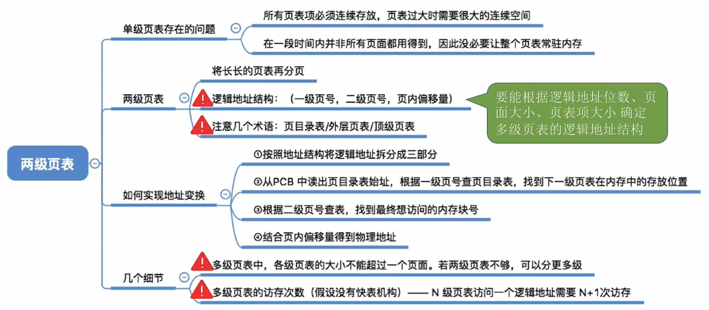
其实就是先通过一级页表查到二级页表在哪里，再通过二级页表查到物理地址
3.4 分段存储管理
分段：将地址空间按照程序自身的逻辑关系划分为若干个段，每段从0开始编址；每个段在内存中占连续空间，但各段之间可以不相邻。
与“分页”的最大区别：离散分配时所分配的地址空间的基本单位不同
分段系统的逻辑地址：段号+段内地址（是数值直接相加，而分页是数值拼接）
段表包含段长+基址（起始位置）（段内地址超过段长的话就是非法的）
| 分页 | 分段 |
|---|---|
| 对用户不可见 | 对用户可见（分段的大小由用户决定） |
| 地址空间一维 | 地址空间二维 |
| 更容易实现信息的共享和保护（纯代码/可重入代码可以共享） | |
| 分页（单级页表）、分段访问一个地址都需要两次访存，分段存储也可引入快表结构 |
段页式管理：
分段：逻辑清晰，但有外部碎片 分页：无外部碎片，但无逻辑结构
逻辑地址 = ⟨段号 S，页号 P，页内偏移 d⟩
相当于要先访问段表，再访问页表，再访问内存（把段内地址，转成页号+页内偏移）
3.5 虚拟内存
3.5.1 虚拟内存概念
根据局部性原理，很快用到的部分装入内存，暂时用不到的留在外存。
执行过程中，访问的信息不在内存时，由操作系统负责将所需信息从外存调入内存。（请求调页功能）
若内存空间不够，由操作系统将暂时用不到的换到外存。（页面置换功能）
虚拟内存：用户感觉到的空间比实际内存大得多
特征：多次性、对换性、虚拟性
实现虚拟内存技术：在前面的基础上，增加请求调页功能，页面置换功能
3.5.2 请求分页管理方式
页面置换算法：
CLOCK：将扫描过的页面访问位改成0（更正），如果访问了就将访问位改成1
3.5.3 页面分配策略
主要是页面分配、置换策略，其他有印象即可
3.5.4 内存映射文件
（课程大纲没看到）
第四章 文件管理
4.1 文件的概念
4.2 文件的逻辑结构
无结构文件：又称流式文件。比如txt。
4.3 文件目录
文件控制块：
树形结构不便于实现文件共享
读文件的时候，一定是先读索引节点，然后读文件数据。
减少读取磁盘次数：FCB分解法；设置当前目录
4.4 文件的物理结构
用户通过逻辑地址来操作自己的文件，操作系统要负责实现从逻辑地址到物理地址的映射
连续分配
物理块号 = 起始块号 + 逻辑块号
可以直接算出逻辑块号对应的物理块号，因此连续分配支持顺序访问和直接访问（即随机访问）
优点：连续分配的文件在顺序读/写时速度最快
缺点：物理上采用连续分配的文件不方便拓展。存储空间利用率低，会产生磁盘碎片。
隐式链接
（说链接分配，默认隐式链接）
除文件的最后一个盘块之外，每个盘块中都存有指向下一个盘块的指针。文件目录包括文件第一块的指针和最后一块的指针。
优点：很方便文件拓展，不会有碎片问题，外存利用率高。
缺点：只支持顺序访问，不支持随机访问，查找效率低，指向下一个盘块的指针也需要耗费少量的存储空间
显式链接
把用于链接文件各物理块的指针显式地存放在一张表中，即 文件分配表（FAT，FileAllocation Table）。一个磁盘只会建立一张文件分配表。开机时文件分配表放入内存，并常驻内存。
优点：很方便文件拓展，不会有碎片问题，外存利用率高，并且支持随机访问。相比于隐式链接来说，地址转换时不需要访问磁盘，因此文件的访问效率更高。
缺点：文件分配表的需要占用一定的存储空间。
索引分配
允许文件离散地分配在各个磁盘块中，系统会为每个文件建立一张索引表，索引表中记录了文件的各个逻辑块对应的物理块（索引表的功能类似于内存管理中的页表——建立逻辑页面到物理页之间的映射关系） 。索引表存放的磁盘块称为索引块。文件数据存放的磁盘块称为数据块。
（如果没有特别说明，可以认为一个索引表占一个磁盘块）
若文件太大，索引表项太多，可以采取以下三种方法解决：
①链接方案：如果索引表太大，一个索引块装不下，那么可以将多个索引块链接起来存放。缺点：若文件很大，索引表很长，就需要将很多个索引块链接起来。想要找到 i 号索引块，必须先依次读入 0~i-1号索引块，这就导致磁盘I/O次数过多，查找效率低下。
②多层索引：建立多层索引（原理类似于多级页表）。使第一层索引块指向第二层的索引块。还可根据文件大小的要求再建立第三层、第四层索引块。采用 K 层索引结构，且顶级索引表未调入内存，则访问一个数据块只需要 K + 1 次读磁盘操作。缺点：即使是小文件，访问一个数据块依然需要K+1次读磁盘。
③混合索引：多种索引分配方式的结合。例如，一个文件的顶级索引表中，既包含直接地址索引（直接指向数据块），又包含一级间接索引（指向单层索引表）、还包含两级间接索引（指向两层索引表）。 优点：对于小文件来说，访问一个数据块所需的读磁盘次数更少。
超级超级超级重要考点：①要会根据多层索引、混合索引的结构计算出文件的最大长度（Key：各级索引表最大不能超过一个块）；②要能自己分析访问某个数据块所需要的读磁盘次数（Key：FCB中会存有指向顶级索引块的指针，因此可以根据FCB读入顶级索引块。每次读入下一级的索引块都需要一次读磁盘操作。另外，要注意题目条件——顶级索引块是否已调入内存）
4.5 空闲存储空间管理
4.6 文件的基本操作
（课程大纲中了解即可）
文件的基本操作-虚拟文件系统，课程大纲里不做重点（或没提及），所以没看
4.7 文件的共享和保护
文件的共享：
硬链接（Hard Link）
- 指向 同一个 inode
- 会增加文件 引用计数
- 删除硬链接，只是减少引用计数
- 文件真正删除的条件：引用计数 = 0
符号链接（Soft Link / Symbolic Link）
- 指向 文件名（路径）（类似一个快捷方式）
- 不增加 inode 的引用计数（不过其自身也是一个文件，所以引用计数=1）
- 文件删除后，符号链接会变成“悬空链接”（dangling link）
只有目录和文件之间能建立链接，文件和文件之间是不能的（没法包含）
第五章 输入输出系统
5.1 I/O设备概述
I/O 设备：可以将数据输入到计算机，或者可以接收计算机输出数据的外部设备，属于计算机中的硬件部件
按信息交换的单位分类的话：块设备（传输快，可寻址）；字符设备（传输慢，不可寻址，中断驱动）
I/O控制器：
有大体印象即可
5.2 I/O控制方式
王道说十分重要，有半小时，课程大纲里没看见
DMA：直接存储器存取
5.3 I/O软件层次结构
5.4 I/O应用程序接口
阻塞I/O：应用程序发出I/O系统调用，进程需转为阻塞态等待。 eg：字符设备接口——从键盘读一个字符 get
非阻塞I/O：应用程序发出I/O系统调用，系统调用可迅速返回，进程无需阻塞等待。 eg：块设备接口——往磁盘写数据 write
5.5 假脱机技术
为什么称为“脱机”——脱离主机的控制进行的输入/输出操作。
在外围控制机的控制下，慢速输入设备的数据先被输入到更快速的磁带上。之后主机可以从快速的磁带上读入数据，从而缓解了速度矛盾。（实现预输入、缓输出）
假脱机技术：又称“SPOOLing 技术”，用软件的方式模拟脱机技术。
输入井和输出井：模拟磁带
输入进程和输出进程：模拟外围控制机
缓冲区：内存中的缓冲区。输入输出时的“中转站”
5.6 设备独立性软件
I/O调度：用某种算法确定一个好的顺序来处理各个I/O请求
设备保护：不同的用户对各个文件有不同的访问权限
5.6.1 设备分配与回收
5.6.2 缓冲区管理
当缓冲区数据非空时，不能往缓冲区冲入数据，只能从缓冲区把数据传出；当缓冲区为空时，可以往缓冲区冲入数据，但必须把缓冲区充满以后，才能从缓冲区把数据传出。
采用双缓冲策略，处理一个数据块的平均耗时为 Max (T, C+M)（假设初始状态为：工作区空，其中一个缓冲区满，另一个缓冲区空）
5.7 调度与管理
5.7.1 磁盘的结构
（柱面号，盘面号，扇区号）来定位任意一个“磁盘块”
5.7.2 磁盘调度算法
一次磁盘读/写操作需要的时间：
寻找时间（寻道时间）TS：在读/写数据前，将磁头移动到指定磁道所花的时间。 ①启动磁头臂是需要时间的。假设耗时为 s； ②移动磁头也是需要时间的。假设磁头匀速移动，每跨越一个磁道耗时为 m，总共需要跨越 n 条磁道。则：寻道时间 TS = s + m*n
延迟时间TR：通过旋转磁盘，使磁头定位到目标扇区所需要的时间。设磁盘转速为 r （单位：转/秒，或 转/分），则平均所需的延迟时间 TR = (1/2)*(1/r) = 1/2r，（1/r是转一圈的时间）
传输时间Tt：从磁盘读出或向磁盘写入数据所经历的时间，假设磁盘转速为 r，此次读/写的字节数为 b，每个磁道上的字节数为 N。则：传输时间Tt = (1/r) * (b/N) = b/(rN)
操作系统只能影响寻道时间。
5.7.3 减少磁盘延时
方法1：交替编号（盘块的交叉编址及信息的优化分布）
磁头读取一块的内容（也就是一个扇区的内容）后，需要一小段时间处理，而盘片又在不停地旋转。（所以如果连续编号，读完上一个，会错过下一个，得再转一圈才行）
方法2：磁盘地址结构的设计
磁盘的物理地址是（柱面号，盘面号，扇区号）而不是（盘面号，柱面号，扇区号）
连续的地址读取，可以减少磁头移动
方法3：错位命名（每一层的盘，扇区的编号是错开的）
由于采用错位命名法，因此读取完磁盘块（000, 00, 111）之后，还有一段时间处理，当（000, 01, 000）第一次划过1号盘面的磁头下方时，就可以直接读取数据。从而减少了延迟时间
5.7.4 磁盘的管理
（课程大纲没有看到）
5.7.5 固态硬盘SSD
课程大纲没看到